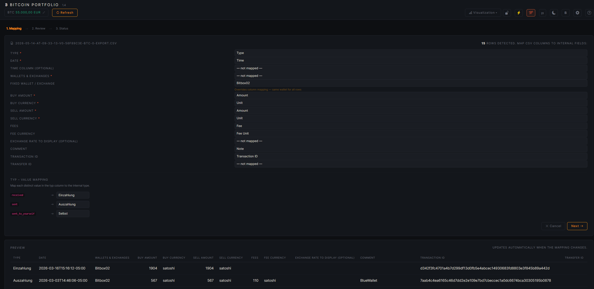
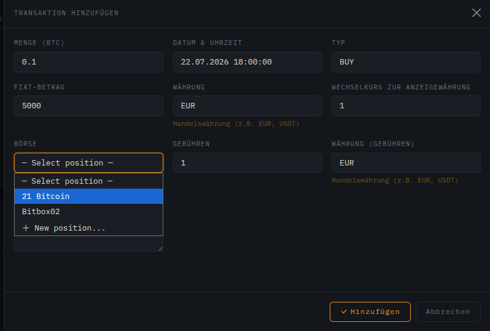
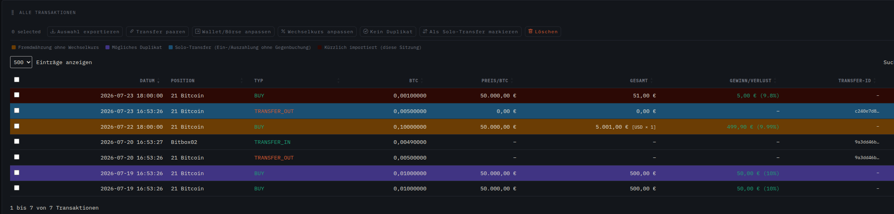
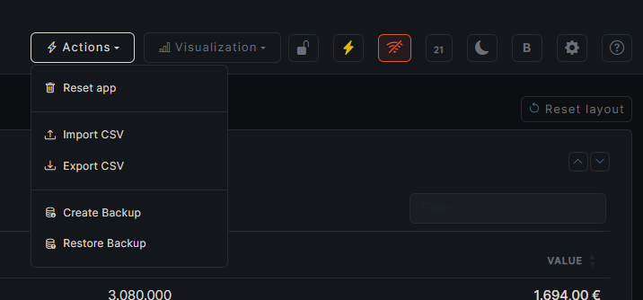

CSV importieren
Über „CSV importieren“ eine Datei auswählen. Der Import läuft als Assistent mit drei Schritten: Mapping, Review und Status.
1. Mapping
Die App erkennt die Spalten automatisch und schlägt eine Zuordnung vor — z. B. für CoinTracking-Exporte, Wallet-Exportformate oder eigene Dateien mit abweichenden Spaltennamen. Eine Live-Vorschau zeigt sofort, wie die erkannten Zeilen interpretiert werden.
- Pflichtfelder (mit *): Typ, Datum, Wallets & Börsen, Kauf-Wert, Kauf-Währung, Verkauf-Wert, Verkauf-Währung müssen einer CSV-Spalte zugeordnet sein.
- Feste Wallet / Börse: überschreibt die Spaltenzuordnung und setzt für alle Zeilen dieselbe Position — sinnvoll bei Dateien, die nur eine Börse abdecken. Ist keine Börse zugeordnet, wird der Bereich farblich hervorgehoben.
- Typ-Wertzuordnung: jeder in der Datei vorkommende Rohwert (z. B. Auszahlung, Staking) wird gezielt einem internen Typ zugeordnet — oder auf – ignorieren – gesetzt, um diese Zeilen beim Import zu überspringen.

2. Review
Jede erkannte Zeile wird vor dem eigentlichen Import einzeln geprüft. Farbig markierte Zeilen zeigen an, wo eine Prüfung sinnvoll ist — z. B. mögliche Duplikate oder ungültige Werte. Über Mehrfachauswahl lassen sich Zeilen gesammelt bestätigen, korrigieren oder von diesem Import ausschließen.

3. Status
Zusammenfassung des Imports: wie viele Zeilen importiert, übersprungen oder als Duplikat erkannt wurden. Von hier geht es zurück in die Datenverwaltung, wo die importierten Transaktionen sofort sichtbar sind.

Eigenes CSV-Format
Ohne CoinTracking-Option exportiert die App im eigenen Format. Das ist auch das Format, das ein manueller CSV-Import ohne CoinTracking-Auto-Mapping erwartet.
"typ","date","exchange","buyQty","buyCur","sellQty","sellCur","fee","feeCur","comment" "Einzahlung","20.07.2026 16:53:27","Bitbox02","0.00490000","BTC","","","","EUR","Example transfer to own wallet" "Auszahlung","20.07.2026 16:53:26","21 Bitcoin","","","0.00500000","BTC","0.00010000","BTC","Example transfer to own wallet" "Trade","19.07.2026 16:53:26","21 Bitcoin","0.01000000","BTC","500.00","EUR","0.00000000","EUR","Example transaction"
Wichtig: typ steuert die Buchungsart (Einzahlung / Auszahlung / Trade), buyQty/buyCur und sellQty/sellCur beschreiben jeweils, was gekauft bzw. verkauft wurde.

Datenverwaltung
Positionen und Transaktionen werden auf der Seite „Datenverwaltung“ gepflegt. Die Kacheln lassen sich per Ziehpunkt neu anordnen und ein- bzw. ausklappen — die Reihenfolge wird gespeichert.
Wallets & Börsen
Tabelle aller Positionen. Über „Wallet/Börse hinzufügen“ eine neue Position anlegen — jede Börse/Wallet muss vor der ersten Buchung einmal angelegt werden. Eine Zeile anklicken filtert die Transaktionsliste auf diese Position; ein Filter blendet Positionen ohne Bestand aus.
Alle Transaktionen
Vollständige Liste aller Buchungen. Über „Transaktion hinzufügen“ öffnet sich ein Formular für eine einzelne Buchung:
| Feld | Bedeutung |
|---|---|
| Menge (BTC) | Gehandelte BTC-Menge, z. B. 0.1 |
| Datum & Uhrzeit | Zeitpunkt der Transaktion |
| Typ | BUY oder SELL |
| Fiat-Betrag | Gegenwert in der Handelswährung, z. B. 5000 |
| Währung | Handelswährung, z. B. EUR oder USDT |
| Wechselkurs zur Anzeigewährung | Nur relevant, wenn Handels- und Anzeigewährung abweichen |
| Börse | Bestehende Position wählen oder über + New position… neu anlegen |
| Gebühren / Währung (Gebühren) | Handelsgebühr inkl. eigener Währung |

Eine oder mehrere Zeilen per Checkbox auswählen, um das Aktionsmenü zu öffnen:
| Aktion | Bedeutung |
|---|---|
| Auswahl exportieren | Nur die markierten Zeilen als CSV exportieren |
| Transfer paaren | Zwei Zeilen (Ein-/Auszahlung) als zusammengehörigen Wallet-Transfer verknüpfen |
| Wallet/Börse anpassen | Position nachträglich ändern |
| Wechselkurs anpassen | Kurs zur Anzeigewährung korrigieren |
| Kein Duplikat | Als Duplikat erkannte Zeile bestätigen und Markierung entfernen |
| Als Solo-Transfer markieren | Ein-/Auszahlung ohne Gegenbuchung bewusst so kennzeichnen |
| Löschen | Ausgewählte Transaktionen entfernen |
Farbige Zeilen-Markierung
Die Hintergrundfarbe einer Zeile in der Transaktionsliste zeigt automatisch einen von vier Zuständen an:
| Farbe | Bedeutung |
|---|---|
| 🟠 Orange | Fremdwährung ohne Wechselkurs — Transaktion in einer anderen Währung als der Anzeigewährung, Wechselkurs steht noch auf 1. Über „Wechselkurs anpassen“ korrigieren. |
| 🟣 Violett | Mögliches Duplikat — Datum, Typ und Menge stimmen mit einer bereits vorhandenen Transaktion überein. Prüfen und ggf. über „Kein Duplikat“ bestätigen oder die Zeile löschen. |
| 🔵 Blau | Solo-Transfer — Ein- oder Auszahlung ohne Gegenbuchung auf einer anderen Position, bewusst als Einzelbuchung markiert. |
| 🔴 Dunkelrot | Kürzlich importiert — Zeile stammt aus dem CSV-Import der aktuellen Sitzung, zur schnellen Kontrolle nach dem Import. |
Die Legende direkt über der Tabelle zeigt dieselben vier Farben zur schnellen Referenz.

Import-Historie
Kachel mit allen bisherigen CSV-Importen: Datum, Dateiname, Gesamtzahl der Zeilen sowie wie viele davon importiert, als Duplikat erkannt oder fehlerhaft waren. Einzelne Importe lassen sich von hier aus löschen.


App sperren
Das Schloss-Symbol im Header (neben „Aktionen“ / „Visualisierung“) verschlüsselt alle Positionen und Transaktionen mit einem Passwort und entfernt die Klartextdaten aus der Datenbank. Nützlich, wenn die App unbeaufsichtigt bleibt oder der zugrunde liegende Rechner nicht vollständig vertrauenswürdig ist.
| Feld | Bedeutung |
|---|---|
| Passwort | Verschlüsselungspasswort — zum späteren Entsperren erforderlich |
| Passwort bestätigen | Muss exakt übereinstimmen, sonst wird das Sperren abgelehnt |
Entsperren
Bei gesperrter App erscheint bei jedem Aufruf der Dialog „App gesperrt“ mit einem Passwortfeld. Nach korrekter Eingabe werden die Daten entschlüsselt und wiederhergestellt.


CSV exportieren
Über „CSV exportieren“ im Header lassen sich alle oder — nach Auswahl in der Tabelle — nur bestimmte Transaktionen exportieren.
| Option | Bedeutung |
|---|---|
| CoinTracking-Format | Checkbox aktivieren, um im CoinTracking-kompatiblen Format statt im eigenen Format zu exportieren |
| Passwort (optional) | Leer lassen → Export als Klartext-.csv. Passwort setzen → verschlüsselte .enc-Datei |
Weitere Funktionen
Die Icon-Leiste rechts im Header bündelt globale Einstellungen und Werkzeuge, die auf allen Seiten verfügbar sind.
Einstellungen
Über das Zahnrad-Symbol öffnet sich der Einstellungen-Dialog:
| Feld | Bedeutung |
|---|---|
| Sprache | Oberflächensprache der App |
| Anzeigewährung | Fiat-Währung für alle berechneten Werte (Bestand, Gewinn/Verlust, …) |
| Schriftart | Im Einundzwanzig-Modus fest auf Inconsolata gestellt und nicht änderbar |
| Steuer-Stichtag (Haltefrist-Wegfall) | Für Coins, die ab diesem Datum gekauft werden, gilt die 1-Jahres-Steuerfreiheit nicht mehr. Leer lassen zum Deaktivieren. Rein informativ, keine Steuerberatung. |
BTC-Kurs
Die Kurs-Anzeige links im Header lässt sich per Klick auf den Wert manuell überschreiben — praktisch, wenn kein aktueller Kurs geladen werden kann.
Offline-Modus
Das WLAN-Symbol schaltet den Offline-Modus um. Ist er aktiv, ruft die App keine Kursdaten automatisch aus dem Internet ab — der Kurs lässt sich weiterhin manuell setzen. Die Einstellung wird lokal im Browser gespeichert.
Aktionen-Menü: Backup & Reset
Neben CSV-Import/-Export enthält das „Aktionen“-Menü ein vollständiges Datenbank-Backup, unabhängig vom CSV-Export:
| Aktion | Bedeutung |
|---|---|
| Backup erstellen | Sichert Positionen, Transaktionen, Import-Historie sowie alle Kurs-Daten (Tages-, Monats- und Jahreskurse) als JSON. Passwort optional — leer lassen für eine unverschlüsselte Datei. |
| Backup einspielen | Löscht ALLE aktuellen Positionen, Transaktionen, die Import-Historie sowie alle Kurs-Daten und ersetzt sie durch das eingespielte Backup. Kann nicht rückgängig gemacht werden. |

Einundzwanzig-Modus
Das „21“-Symbol im Header schaltet ein alternatives Farbschema mit eigener Schriftart (Inconsolata) und einem durchlaufenden Ticker mit Bitcoiner-Sprüchen ein. Solange der Modus aktiv ist, sind der normale Hell/Dunkel-Umschalter und die Schriftart-Auswahl in den Einstellungen gesperrt.

Passwort-Login
Optional, standardmäßig deaktiviert: ein einzelnes, app-weites Passwort, das jede Seite und jeden API-Endpunkt hinter einem Login-Bildschirm schützt. Aktivieren, ändern oder deaktivieren unter Einstellungen → „Passwort-Login“ — wirkt sofort, kein Neustart nötig.
| Feld | Bedeutung |
|---|---|
| Passwort | Ein einzelnes app-weites Passwort — kein Benutzername, keine separaten Konten |
| Aktuelles Passwort | Erforderlich, um ein bereits gesetztes Passwort zu ändern oder zu deaktivieren |